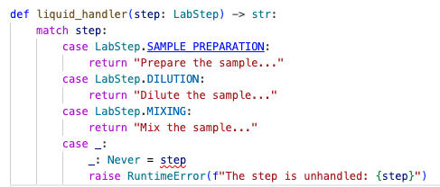

Have you ever needed to say "never"? Sometimes, when coding, explicitly indicating something should never happen can actually save you.
Imagine you're developing data processing pipeline for laboratory automation. Each step in the pipeline - sample preparation, dilution, mixing - is an enum value in your logic. What happens if new steps are added, e.g normalization, but you forget to update your critical code that handles each step 😶🌫️? Your processing pipeline can silently skip 🤐 or worse produce errors in production 🔥. Missing a single processing step, could mean making flawed results based on incomplete processing pipeline 🙅.
🛃 Exhaustive checks over enums, ensures your code aware to such future changes by providing warning about unhandled cases.
That's where Python's special type Never comes to the rescue.
It's introduced in Python 3.11 in typing module and is used to represent a value that should never be returned.
It's mostly found in code to annotate functions that always raise exceptions or terminate the program.
For example:
import sys
from typing import Never
def lab_processing_error(message: str) -> Never:
raise RuntimeError(f"Lab processing error: {message}")
Here, lab_processing_error will never return and triggers runtime error and stops execution.
Besides signaling errors, the Never type can also be useful for making sure all possible cases (like enum values) are handled in your code.
Never for Exhaustive EnumsIn a data science project, you can use an Enum to represent a finite set of experiment steps. Let's say:
class LabStep(Enum):
SAMPLE_PREPARATION = auto()
DILUTION = auto()
MIXING = auto()
And in your main logic, you want to ensure that all steps are being processed.
The power of Never shines in the default of your processing logic.
When you annotate this default branch using Never it's telling the type checker that this is the "impossible case" so it should not happen.
If it does happen, it means that you have future enum values that are not yet handled.
def liquid_handler(step: LabStep) -> str:
match step:
case LabStep.SAMPLE_PREPARATION:
return "Prepare the sample..."
case LabStep.DILUTION:
return "Dilute the sample..."
case LabStep.MIXING:
return "Mix the sample..."
case _:
# This should never happen if all enums are handled
_: Never = step
raise RuntimeError(f"The step is unhandled: {step}")
When you add a new step, such as normalization.
class LabStep(Enum):
SAMPLE_PREPARATION = auto()
DILUTION = auto()
MIXING = auto()
NORMALIZATION = auto() # New step added
def liquid_handler(step: LabStep) -> str:
match step:
case LabStep.SAMPLE_PREPARATION:
return "Prepare the sample..."
case LabStep.DILUTION:
return "Dilute the sample..."
case LabStep.MIXING:
return "Mix the sample..."
case _:
_: Never = step
raise RuntimeError(f"The step is unhandled: {step}")
The default case will now be reachable, unfortunately and when you run mypy, it will raise a type ERROR, with a beautiful message.
The message is very clear, pointing you to the unhandled enum value 🙌 !
never_say_never.py:26: error: Incompatible types in assignment (expression has type "Literal[LabStep.NORMALIZATION]", variable has type "Never") [assignment]
Found 1 error in 1 file (checked 1 source file)
When you have the mypy extension enabled in VSCode, you’ll notice a helpful little red squiggle 〰️ like this:

This error helps you as a reminder that you did NOT yet handle all your enum cases.
To fix this, we need to handle our new lab step.
def liquid_handler(step: LabStep) -> str:
match step:
case LabStep.SAMPLE_PREPARATION:
return "Prepare the sample..."
case LabStep.DILUTION:
return "Dilute the sample..."
case LabStep.MIXING:
return "Mix the sample..."
# Handle the missing step
case LabStep.NORMALIZATION:
return "Normalize the sample..."
case _:
_: Never = step
raise RuntimeError(f"The step is unhandled: {step}")
Now the red squiggle is gone and also when you run again mypy, it happily reports 🥳:
Success: no issues found in 1 source file
Never type is your friend to provide a kind reminder for unhandled enum casesWhen enums code split across files, team collaboration, and ever changing requirements as we make progress in science, this pattern is our line of defense to catch errors before we run our code in production.
🫰 Consider giving Never a try in your projects. Enabling the mypy extension in VSCode and adding mypy checks to your CI pipeline can help us shipping more reliable code.